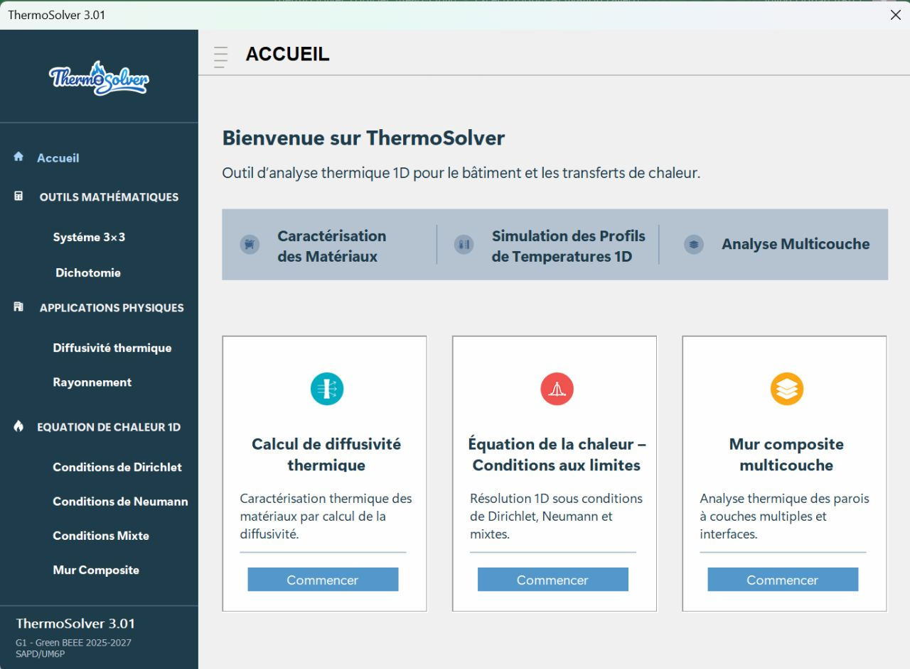
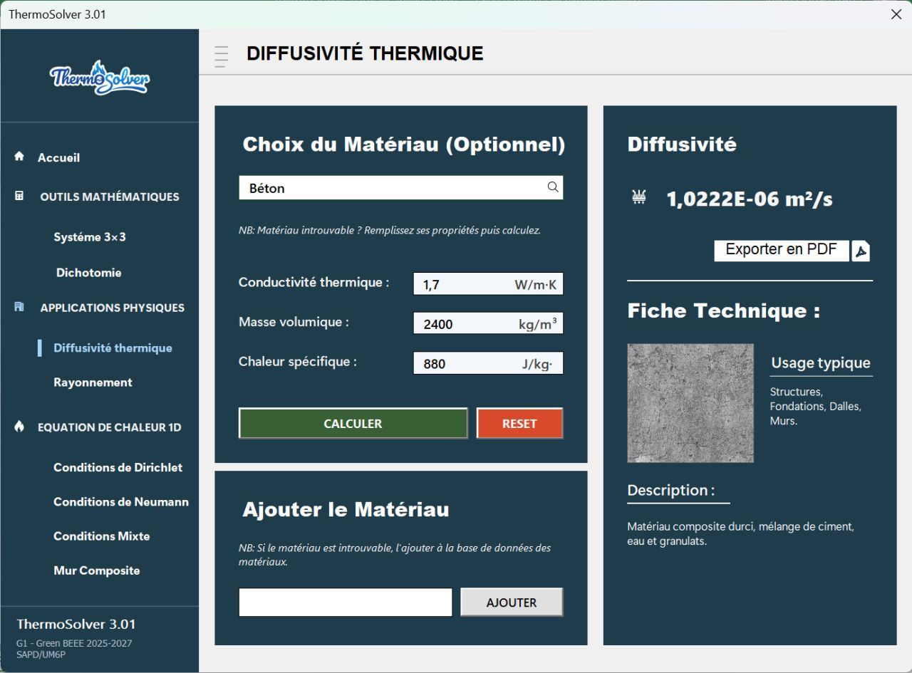

ThermoSolver · simulation thermique 1D
Application Excel VBA développée en équipe pour analyser le comportement thermique des matériaux, simuler la conduction transitoire 1D et étudier les parois multicouches.
Participation au développement collectif de l’application Excel VBA et à la mise en application numérique des notions de transfert thermique.
Lire la démarche et les réalisations
Interface d’accueil de ThermoSolver 3.01, notre application Excel VBA d’analyse thermique numérique.
Le contexte
Dans le cadre de notre projet de fin de module du Master Green Building Engineering and Energy Efficiency (Green BEEE) à l’UM6P, mon groupe et moi avons développé ThermoSolver. Cette application Excel VBA transforme les notions de transfert de chaleur en simulations numériques et en résultats graphiques.
L’objectif
Mieux comprendre le comportement des matériaux et des parois face à la chaleur, en reliant leurs propriétés thermiques à l’évolution des températures, pour éclairer les choix de conception.
Mon rôle
Participation au développement collectif de l’application Excel VBA et à la mise en application numérique des notions de transfert thermique.
Le travail mené
- Développement d’une application Excel VBA regroupant les modules d’analyse thermique.
- Implémentation de la résolution numérique de l’équation de la chaleur 1D par différences finies.
- Intégration de visualisations graphiques et de la génération de rapports techniques PDF.
Les fonctionnalités de ThermoSolver
Caractérisation des matériaux
Calcul de la diffusivité thermique et détermination de l’équilibre des températures de surface sous rayonnement, pour analyser le comportement des matériaux face à la chaleur.
Simulation thermique transitoire 1D
Résolution de l’équation de la chaleur par la méthode des différences finies, afin de suivre l’évolution des profils de température dans le temps.
Parois composites multicouches
Étude de murs constitués de plusieurs matériaux, avec prise en compte des interfaces et des conditions aux limites de Dirichlet, de Neumann et mixtes.
Visualisation et rapports techniques
Visualisation graphique des résultats en temps réel et génération automatisée de rapports au format PDF, pour faciliter l’interprétation et le partage des analyses.
Ce que ce travail apporte
ThermoSolver relie la théorie des transferts thermiques à une application numérique : caractérisation des matériaux, simulation des parois et lecture graphique des résultats. La réalisation de cet outil a également été une expérience de travail en équipe, associant programmation, modélisation et mise en commun des compétences.
Captures de ThermoSolver
